Chapter 9: Chapter VI¶
9.1 On the Figures of the Transparent Bodies¶
Which serve for Refraction and for Reflexion¶
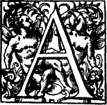
fter having explained how the properties of reflexion and refraction follow from what we have supposed concerning the nature of light, and of opaque bodies, and of transparent media, I will here set forth a very easy and natural way of deducing, from the same principles, the true figures which serve, either by reflexion or by refraction, to collect or disperse the rays of light, as may be desired. For though I do not see yet that there are means of making use of these figures, so far as relates to Refraction, not only because of the difficulty of shaping the glasses of Telescopes with the requisite exactitude according to these figures, but also because there exists in refraction itself a property which hinders the perfect concurrence of the rays, as Mr. Newton has very well proved by experiment, I will yet not desist from relating the invention, since it offers itself, so to speak, of itself, and because it further confirms our Theory of refraction, by the agreement which here is found between the refracted ray and the reflected ray. Besides, it may occur that some one in the future will discover in it utilities which at present are not seen.
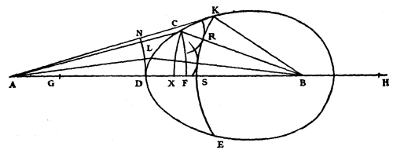
To proceed then to these figures, let us suppose first that it is desired to find a surface CDE which shall reassemble at a point B rays coming from another point A; and that the summit of the surface shall be the given point D in the straight line AB. I say that, whether by reflexion or by refraction, it is only necessary to make this surface such that the path of the light from the point A to all points of the curved line CDE, and from these to the point of concurrence (as here the path along the straight lines AC, CB, along AL, LB, and along AD, DB), shall be everywhere traversed in equal times: by which principle the finding of these curves becomes very easy.
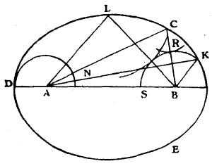
So far as relates to the reflecting surface, since the sum of the lines AC, CB ought to be equal to that of AD, DB, it appears that DCE ought to be an ellipse; and for refraction, the ratio of the velocities of waves of light in the media A and B being supposed to be known, for example that of 3 to 2 (which is the same, as we have shown, as the ratio of the Sines in the refraction), it is only necessary to make DH equal to 3/2 of DB; and having after that described from the centre A some arc FC, cutting DB at F, then describe another from centre B with its semi-diameter BX equal to 2/3 of FH; and the point of intersection of the two arcs will be one of the points required, through which the curve should pass. For this point, having been found in this fashion, it is easy forthwith to demonstrate that the time along AC, CB, will be equal to the time along AD, DB.
For assuming that the line AD represents the time which the light takes to traverse this same distance AD in air, it is evident that DH, equal to 3/2 of DB, will represent the time of the light along DB in the medium, because it needs here more time in proportion as its speed is slower. Therefore the whole line AH will represent the time along AD, DB. Similarly the line AC or AF will represent the time along AC; and FH being by construction equal to 3/2 of CB, it will represent the time along CB in the medium; and in consequence the whole line AH will represent also the time along AC, CB. Whence it appears that the time along AC, CB, is equal to the time along AD, DB. And similarly it can be shown if L and K are other points in the curve CDE, that the times along AL, LB, and along AK, KB, are always represented by the line AH, and therefore equal to the said time along AD, DB.
In order to show further that the surfaces, which these curves will generate by revolution, will direct all the rays which reach them from the point A in such wise that they tend towards B, let there be supposed a point K in the curve, farther from D than C is, but such that the straight line AK falls from outside upon the curve which serves for the refraction; and from the centre B let the arc KS be described, cutting BD at S, and the straight line CB at R; and from the centre A describe the arc DN meeting AK at N.
Since the sums of the times along AK, KB, and along AC, CB are equal, if from the former sum one deducts the time along KB, and if from the other one deducts the time along RB, there will remain the time along AK as equal to the time along the two parts AC, CR. Consequently in the time that the light has come along AK it will also have come along AC and will in addition have made, in the medium from the centre C, a partial spherical wave, having a semi-diameter equal to CR. And this wave will necessarily touch the circumference KS at R, since CB cuts this circumference at right angles. Similarly, having taken any other point L in the curve, one can show that in the same time as the light passes along AL it will also have come along AL and in addition will have made a partial wave, from the centre L, which will touch the same circumference KS. And so with all other points of the curve CDE. Then at the moment that the light reaches K the arc KRS will be the termination of the movement, which has spread from A through DCK. And thus this same arc will constitute in the medium the propagation of the wave emanating from A; which wave may be represented by the arc DN, or by any other nearer the centre A. But all the pieces of the arc KRS are propagated successively along straight lines which are perpendicular to them, that is to say, which tend to the centre B (for that can be demonstrated in the same way as we have proved above that the pieces of spherical waves are propagated along the straight lines coming from their centre), and these progressions of the pieces of the waves constitute the rays themselves of light. It appears then that all these rays tend here towards the point B.
One might also determine the point C, and all the others, in this curve which serves for the refraction, by dividing DA at G in such a way that DG is 2/3 of DA, and describing from the centre B any arc CX which cuts BD at N, and another from the centre A with its semi-diameter AF equal to 3/2 of GX; or rather, having described, as before, the arc CX, it is only necessary to make DF equal to 3/2 of DX, and from-the centre A to strike the arc FC; for these two constructions, as may be easily known, come back to the first one which was shown before. And it is manifest by the last method that this curve is the same that Mr. Des Cartes has given in his Geometry, and which he calls the first of his Ovals.
It is only a part of this oval which serves for the refraction, namely, the part DK, ending at K, if AK is the tangent. As to the, other part, Des Cartes has remarked that it could serve for reflexions, if there were some material of a mirror of such a nature that by its means the force of the rays (or, as we should say, the velocity of the light, which he could not say, since he held that the movement of light was instantaneous) could be augmented in the proportion of 3 to 2. But we have shown that in our way of explaining reflexion, such a thing could not arise from the matter of the mirror, and it is entirely impossible.
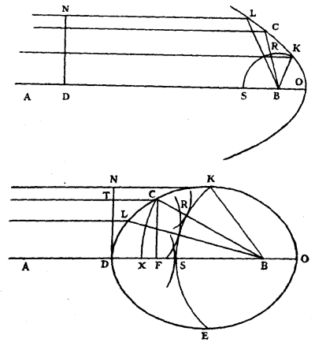
From what has been demonstrated about this oval, it will be easy to find the figure which serves to collect to a point incident parallel rays. For by supposing just the same construction, but the point A infinitely distant, giving parallel rays, our oval becomes a true Ellipse, the construction of which differs in no way from that of the oval, except that FC, which previously was an arc of a circle, is here a straight line, perpendicular to DB. For the wave of light DN, being likewise represented by a straight line, it will be seen that all the points of this wave, travelling as far as the surface KD along lines parallel to DB, will advance subsequently towards the point B, and will arrive there at the same time. As for the Ellipse which served for reflexion, it is evident that it will here become a parabola, since its focus A may be regarded as infinitely distant from the other, B, which is here the focus of the parabola, towards which all the reflexions of rays parallel to AB tend. And the demonstration of these effects is just the same as the preceding.
But that this curved line CDE which serves for refraction is an Ellipse, and is such that its major diameter is to the distance between its foci as 3 to 2, which is the proportion of the refraction, can be easily found by the calculus of Algebra. For DB, which is given, being called a; its undetermined perpendicular DT being called x; and TC y; FB will be a - y; CB will be sqrt(xx + aa - 2ay + yy). But the nature of the curve is such that 2/3 of TC together with CB is equal to DB, as was stated in the last construction: then the equation will be between (2/3)y + sqrt(xx + aa - 2ay + yy) and a; which being reduced, gives (6/5)ay - yy equal to (9/5)xx; that is to say that having made DO equal to 6/5 of DB, the rectangle DFO is equal to 9/5 of the square on FC. Whence it is seen that DC is an ellipse, of which the axis DO is to the parameter as 9 to 5; and therefore the square on DO is to the square of the distance between the foci as 9 to 9 - 5, that is to say 4; and finally the line DO will be to this distance as 3 to 2.
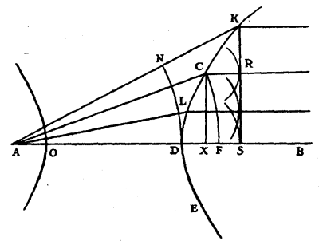
Again, if one supposes the point B to be infinitely distant, in lieu of our first oval we shall find that CDE is a true Hyperbola; which will make those rays become parallel which come from the point A. And in consequence also those which are parallel within the transparent body will be collected outside at the point A. Now it must be remarked that CX and KS become straight lines perpendicular to BA, because they represent arcs of circles the centre of which is infinitely distant. And the intersection of the perpendicular CX with the arc FC will give the point C, one of those through which the curve ought to pass. And this operates so that all the parts of the wave of light DN, coming to meet the surface KDE, will advance thence along parallels to KS and will arrive at this straight line at the same time; of which the proof is again the same as that which served for the first oval. Besides one finds by a calculation as easy as the preceding one, that CDE is here a hyperbola of which the axis DO is 4/5 of AD, and the parameter equal to AD. Whence it is easily proved that DO is to the distance between the foci as 3 to 2.
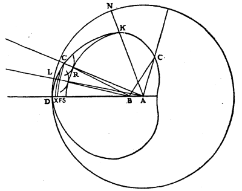
These are the two cases in which Conic sections serve for refraction, and are the same which are explained, in his Dioptrique, by Des Cartes, who first found out the use of these lines in relation to refraction, as also that of the Ovals the first of which we have already set forth. The second oval is that which serves for rays that tend to a given point; in which oval, if the apex of the surface which receives the rays is D, it will happen that the other apex will be situated between B and A, or beyond A, according as the ratio of AD to DB is given of greater or lesser value. And in this latter case it is the same as that which Des Cartes calls his 3rd oval.
Now the finding and construction of this second oval is the same as that of the first, and the demonstration of its effect likewise. But it is worthy of remark that in one case this oval becomes a perfect circle, namely when the ratio of AD to DB is the same as the ratio of the refractions, here as 3 to 2, as I observed a long time ago. The 4th oval, serving only for impossible reflexions, there is no need to set it forth.
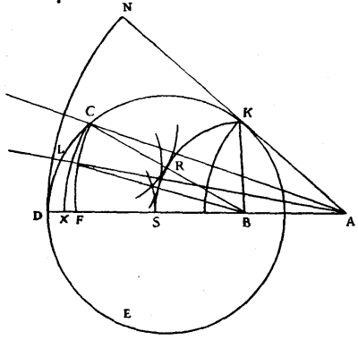
As for the manner in which Mr. Des Cartes discovered these lines, since he has given no explanation of it, nor any one else since that I know of, I will say here, in passing, what it seems to me it must have been. Let it be proposed to find the surface generated by the revolution of the curve KDE, which, receiving the incident rays coming to it from the point A, shall deviate them toward the point B. Then considering this other curve as already known, and that its apex D is in the straight line AB, let us divide it up into an infinitude of small pieces by the points G, C, F; and having drawn from each of these points, straight lines towards A to represent the incident rays, and other straight lines towards B, let there also be described with centre A the arcs GL, CM, FN, DO, cutting the rays that come from A at L, M, N, O; and from the points K, G, C, F, let there be described the arcs KQ, GR, CS, FT cutting the rays towards B at Q, R, S, T; and let us suppose that the straight line HKZ cuts the curve at K at right-angles.
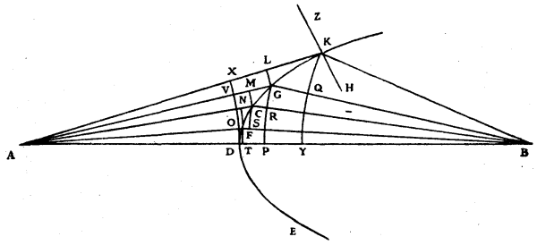
Then AK being an incident ray, and KB its refraction within the medium, it needs must be, according to the law of refraction which was known to Mr. Des Cartes, that the sine of the angle ZKA should be to the sine of the angle HKB as 3 to 2, supposing that this is the proportion of the refraction of glass; or rather, that the sine of the angle KGL should have this same ratio to the sine of the angle GKQ, considering KG, GL, KQ as straight lines because of their smallness. But these sines are the lines KL and GQ, if GK is taken as the radius of the circle. Then LK ought to be to GQ as 3 to 2; and in the same ratio MG to CR, NC to FS, OF to DT. Then also the sum of all the antecedents to all the consequents would be as 3 to 2. Now by prolonging the arc DO until it meets AK at X, KX is the sum of the antecedents. And by prolonging the arc KQ till it meets AD at Y, the sum of the consequents is DY. Then KX ought to be to DY as 3 to 2. Whence it would appear that the curve KDE was of such a nature that having drawn from some point which had been assumed, such as K, the straight lines KA, KB, the excess by which AK surpasses AD should be to the excess of DB over KB, as 3 to 2. For it can similarly be demonstrated, by taking any other point in the curve, such as G, that the excess of AG over AD, namely VG, is to the excess of BD over DG, namely DP, in this same ratio of 3 to 2. And following this principle Mr. Des Cartes constructed these curves in his Geometric; and he easily recognized that in the case of parallel rays, these curves became Hyperbolas and Ellipses.
Let us now return to our method and let us see how it leads without difficulty to the finding of the curves which one side of the glass requires when the other side is of a given figure; a figure not only plane or spherical, or made by one of the conic sections (which is the restriction with which Des Cartes proposed this problem, leaving the solution to those who should come after him) but generally any figure whatever: that is to say, one made by the revolution of any given curved line to which one must merely know how to draw straight lines as tangents.
Let the given figure be that made by the revolution of some curve such as AK about the axis AV, and that this side of the glass receives rays coming from the point L. Furthermore, let the thickness AB of the middle of the glass be given, and the point F at which one desires the rays to be all perfectly reunited, whatever be the first refraction occurring at the surface AK.
I say that for this the sole requirement is that the outline BDK which constitutes the other surface shall be such that the path of the light from the point L to the surface AK, and from thence to the surface BDK, and from thence to the point F, shall be traversed everywhere in equal times, and in each case in a time equal to that which the light employs, to pass along the straight line LF of which the part AB is within the glass.
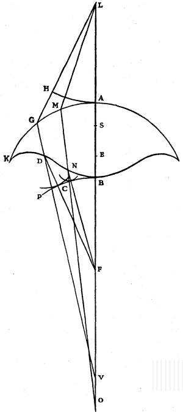
Let LG be a ray falling on the arc AK. Its refraction GV will be given by means of the tangent which will be drawn at the point G. Now in GV the point D must be found such that FD together with 3/2 of DG and the straight line GL, may be equal to FB together with 3/2 of BA and the straight line AL; which, as is clear, make up a given length. Or rather, by deducting from each the length of LG, which is also given, it will merely be needful to adjust FD up to the straight line VG in such a way that FD together with 3/2 of DG is equal to a given straight line, which is a quite easy plane problem: and the point D will be one of those through which the curve BDK ought to pass. And similarly, having drawn another ray LM, and found its refraction MO, the point N will be found in this line, and so on as many times as one desires.
To demonstrate the effect of the curve, let there be described about the centre L the circular arc AH, cutting LG at H; and about the centre F the arc BP; and in AB let AS be taken equal to 2/3 of HG; and SE equal to GD. Then considering AH as a wave of light emanating from the point L, it is certain that during the time in which its piece H arrives at G the piece A will have advanced within the transparent body only along AS; for I suppose, as above, the proportion of the refraction to be as 3 to 2. Now we know that the piece of wave which is incident on G, advances thence along the line GD, since GV is the refraction of the ray LG. Then during the time that this piece of wave has taken from G to D, the other piece which was at S has reached E, since GD, SE are equal. But while the latter will advance from E to B, the piece of wave which was at D will have spread into the air its partial wave, the semi-diameter of which, DC (supposing this wave to cut the line DF at C), will be 3/2 of EB, since the velocity of light outside the medium is to that inside as 3 to 2. Now it is easy to show that this wave will touch the arc BP at this point C. For since, by construction, FD + 3/2 DG + GL are equal to FB + 3/2 BA + AL; on deducting the equals LH, LA, there will remain FD + 3/2 DG + GH equal to FB + 3/2 BA. And, again, deducting from one side GH, and from the other side 3/2 of AS, which are equal, there will remain FD with 3/2 DG equal to FB with 3/2 of BS. But 3/2 of DG are equal to 3/2 of ES; then FD is equal to FB with 3/2 of BE. But DC was equal to 3/2 of EB; then deducting these equal lengths from one side and from the other, there will remain CF equal to FB. And thus it appears that the wave, the semi-diameter of which is DC, touches the arc BP at the moment when the light coming from the point L has arrived at B along the line LB. It can be demonstrated similarly that at this same moment the light that has come along any other ray, such as LM, MN, will have propagated the movement which is terminated at the arc BP. Whence it follows, as has been often said, that the propagation of the wave AH, after it has passed through the thickness of the glass, will be the spherical wave BP, all the pieces of which ought to advance along straight lines, which are the rays of light, to the centre F. Which was to be proved. Similarly these curved lines can be found in all the cases which can be proposed, as will be sufficiently shown by one or two examples which I will add.
Let there be given the surface of the glass AK, made by the revolution about the axis BA of the line AK, which may be straight or curved. Let there be also given in the axis the point L and the thickness BA of the glass; and let it be required to find the other surface KDB, which receiving rays that are parallel to AB will direct them in such wise that after being again refracted at the given surface AK they will all be reassembled at the point L.
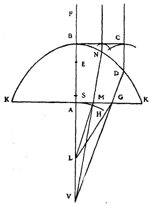
From the point L let there be drawn to some point of the given line AK the straight line LG, which, being considered as a ray of light, its refraction GD will then be found. And this line being then prolonged at one side or the other will meet the straight line BL, as here at V. Let there then be erected on AB the perpendicular BC, which will represent a wave of light coming from the infinitely distant point F, since we have supposed the rays to be parallel. Then all the parts of this wave BC must arrive at the same time at the point L; or rather all the parts of a wave emanating from the point L must arrive at the same time at the straight line BC. And for that, it is necessary to find in the line VGD the point D such that having drawn DC parallel to AB, the sum of CD, plus 3/2 of DG, plus GL may be equal to 3/2 of AB, plus AL: or rather, on deducting from both sides GL, which is given, CD plus 3/2 of DG must be equal to a given length; which is a still easier problem than the preceding construction. The point D thus found will be one of those through which the curve ought to pass; and the proof will be the same as before. And by this it will be proved that the waves which come from the point L, after having passed through the glass KAKB, will take the form of straight lines, as BC; which is the same thing as saying that the rays will become parallel. Whence it follows reciprocally that parallel rays falling on the surface KDB will be reassembled at the point L.
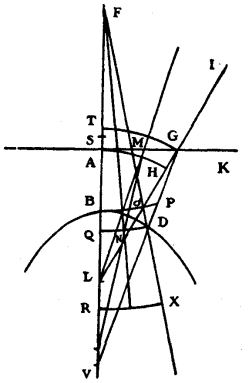
Again, let there be given the surface AK, of any desired form, generated by revolution about the axis AB, and let the thickness of the glass at the middle be AB. Also let the point L be given in the axis behind the glass; and let it be supposed that the rays which fall on the surface AK tend to this point, and that it is required to find the surface BD, which on their emergence from the glass turns them as if they came from the point F in front of the glass.
Having taken any point G in the line AK, and drawing the straight line IGL, its part GI will represent one of the incident rays, the refraction of which, GV, will then be found: and it is in this line that we must find the point D, one of those through which the curve DG ought to pass. Let us suppose that it has been found: and about L as centre let there be described GT, the arc of a circle cutting the straight line AB at T, in case the distance LG is greater than LA; for otherwise the arc AH must be described about the same centre, cutting the straight line LG at H. This arc GT (or AH, in the other case) will represent an incident wave of light, the rays of which tend towards L. Similarly, about the centre F let there be described the circular arc DQ, which will represent a wave emanating from the point F.
Then the wave TG, after having passed through the glass, must form the wave QD; and for this I observe that the time taken by the light along GD in the glass must be equal to that taken along the three, TA, AB, and BQ, of which AB alone is within the glass. Or rather, having taken AS equal to 2/3 of AT, I observe that 3/2 of GD ought to be equal to 3/2 of SB, plus BQ; and, deducting both of them from FD or FQ, that FD less 3/2 of GD ought to be equal to FB less 3/2 of SB. And this last difference is a given length: and all that is required is to draw the straight line FD from the given point F to meet VG so that it may be thus. Which is a problem quite similar to that which served for the first of these constructions, where FD plus 3/2 of GD had to be equal to a given length.
In the demonstration it is to be observed that, since the arc BC falls within the glass, there must be conceived an arc RX, concentric with it and on the other side of QD. Then after it shall have been shown that the piece G of the wave GT arrives at D at the same time that the piece T arrives at Q, which is easily deduced from the construction, it will be evident as a consequence that the partial wave generated at the point D will touch the arc RX at the moment when the piece Q shall have come to R, and that thus this arc will at the same moment be the termination of the movement that comes from the wave TG; whence all the rest may be concluded.
Having shown the method of finding these curved lines which serve for the perfect concurrence of the rays, there remains to be explained a notable thing touching the uncoordinated refraction of spherical, plane, and other surfaces: an effect which if ignored might cause some doubt concerning what we have several times said, that rays of light are straight lines which intersect at right angles the waves which travel along them.
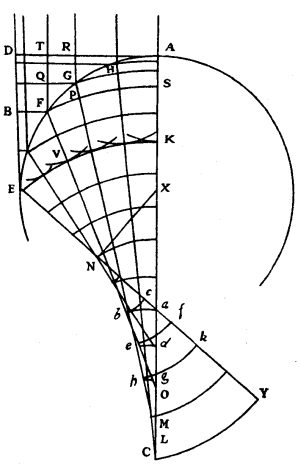
For in the case of rays which, for example, fall parallel upon a spherical surface AFE, intersecting one another, after refraction, at different points, as this figure represents; what can the waves of light be, in this transparent body, which are cut at right angles by the converging rays? For they can not be spherical. And what will these waves become after the said rays begin to intersect one another? It will be seen in the solution of this difficulty that something very remarkable comes to pass herein, and that the waves do not cease to persist though they do not continue entire, as when they cross the glasses designed according to the construction we have seen.
According to what has been shown above, the straight line AD, which has been drawn at the summit of the sphere, at right angles to the axis parallel to which the rays come, represents the wave of light; and in the time taken by its piece D to reach the spherical surface AGE at E, its other parts will have met the same surface at F, G, H, etc., and will have also formed spherical partial waves of which these points are the centres. And the surface EK which all those waves will touch, will be the continuation of the wave AD in the sphere at the moment when the piece D has reached E. Now the line EK is not an arc of a circle, but is a curved line formed as the evolute of another curve ENC, which touches all the rays HL, GM, FO, etc., that are the refractions of the parallel rays, if we imagine laid over the convexity ENC a thread which in unwinding describes at its end E the said curve EK. For, supposing that this curve has been thus described, we will show that the said waves formed from the centres F, G, H, etc., will all touch it.
It is certain that the curve EK and all the others described by the evolution of the curve ENC, with different lengths of thread, will cut all the rays HL, GM, FO, etc., at right angles, and in such wise that the parts of them intercepted between two such curves will all be equal; for this follows from what has been demonstrated in our treatise de Motu Pendulorum. Now imagining the incident rays as being infinitely near to one another, if we consider two of them, as RG, TF, and draw GQ perpendicular to RG, and if we suppose the curve FS which intersects GM at P to have been described by evolution from the curve NC, beginning at F, as far as which the thread is supposed to extend, we may assume the small piece FP as a straight line perpendicular to the ray GM, and similarly the arc GF as a straight line. But GM being the refraction of the ray RG, and FP being perpendicular to it, QF must be to GP as 3 to 2, that is to say in the proportion of the refraction; as was shown above in explaining the discovery of Des Cartes. And the same thing occurs in all the small arcs GH, HA, etc., namely that in the quadrilaterals which enclose them the side parallel to the axis is to the opposite side as 3 to 2. Then also as 3 to 2 will the sum of the one set be to the sum of the other; that is to say, TF to AS, and DE to AK, and BE to SK or DV, supposing V to be the intersection of the curve EK and the ray FO. But, making FB perpendicular to DE, the ratio of 3 to 2 is also that of BE to the semi-diameter of the spherical wave which emanated from the point F while the light outside the transparent body traversed the space BE. Then it appears that this wave will intersect the ray FM at the same point V where it is intersected at right angles by the curve EK, and consequently that the wave will touch this curve. In the same way it can be proved that the same will apply to all the other waves above mentioned, originating at the points G, H, etc.; to wit, that they will touch the curve EK at the moment when the piece D of the wave ED shall have reached E.
Now to say what these waves become after the rays have begun to cross one another: it is that from thence they fold back and are composed of two contiguous parts, one being a curve formed as evolute of the curve ENC in one sense, and the other as evolute of the same curve in the opposite sense. Thus the wave KE, while advancing toward the meeting place becomes abc, whereof the part ab is made by the evolute bC, a portion of the curve ENC, while the end C remains attached; and the part bc by the evolute of the portion bE while the end E remains attached. Consequently the same wave becomes def, then ghk, and finally CY, from whence it subsequently spreads without any fold, but always along curved lines which are evolutes of the curve ENC, increased by some straight line at the end C.
There is even, in this curve, a part EN which is straight, N being the point where the perpendicular from the centre X of the sphere falls upon the refraction of the ray DE, which I now suppose to touch the sphere. The folding of the waves of light begins from the point N up to the end of the curve C, which point is formed by taking AC to CX in the proportion of the refraction, as here 3 to 2.
As many other points as may be desired in the curve NC are found by a Theorem which Mr. Barrow has demonstrated in section 12 of his Lectiones Opticae, though for another purpose. And it is to be noted that a straight line equal in length to this curve can be given. For since it together with the line NE is equal to the line CK, which is known, since DE is to AK in the proportion of the refraction, it appears that by deducting EN from CK the remainder will be equal to the curve NC.
Similarly the waves that are folded back in reflexion by a concave spherical mirror can be found. Let ABC be the section, through the axis, of a hollow hemisphere, the centre of which is D, its axis being DB, parallel to which I suppose the rays of light to come. All the reflexions of those rays which fall upon the quarter-circle AB will touch a curved line AFE, of which line the end E is at the focus of the hemisphere, that is to say, at the point which divides the semi-diameter BD into two equal parts. The points through which this curve ought to pass are found by taking, beyond A, some arc AO, and making the arc OP double the length of it; then dividing the chord OP at F in such wise that the part FP is three times the part FO; for then F is one of the required points.
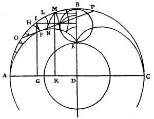
And as the parallel rays are merely perpendiculars to the waves which fall on the concave surface, which waves are parallel to AD, it will be found that as they come successively to encounter the surface AB, they form on reflexion folded waves composed of two curves which originate from two opposite evolutions of the parts of the curve AFE. So, taking AD as an incident wave, when the part AG shall have met the surface AI, that is to say when the piece G shall have reached I, it will be the curves HF, FI, generated as evolutes of the curves FA, FE, both beginning at F, which together constitute the propagation of the part AG. And a little afterwards, when the part AK has met the surface AM, the piece K having come to M, then the curves LN, NM, will together constitute the propagation of that part. And thus this folded wave will continue to advance until the point N has reached the focus E. The curve AFE can be seen in smoke, or in flying dust, when a concave mirror is held opposite the sun. And it should be known that it is none other than that curve which is described by the point E on the circumference of the circle EB, when that circle is made to roll within another whose semi-diameter is ED and whose centre is D. So that it is a kind of Cycloid, of which, however, the points can be found geometrically.
Its length is exactly equal to 3/4 of the diameter of the sphere, as can be found and demonstrated by means of these waves, nearly in the same way as the mensuration of the preceding curve; though it may also be demonstrated in other ways, which I omit as outside the subject. The area AOBEFA, comprised between the arc of the quarter-circle, the straight line BE, and the curve EFA, is equal to the fourth part of the quadrant DAB.